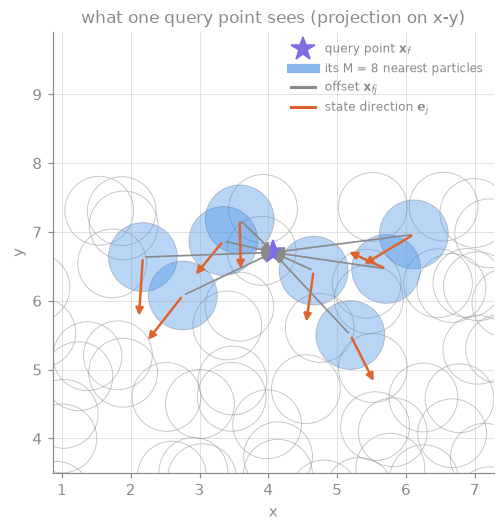
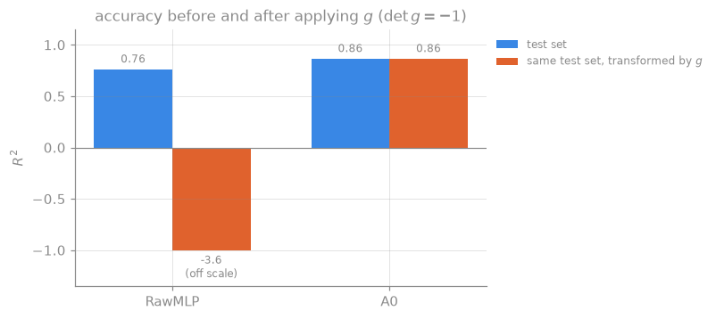
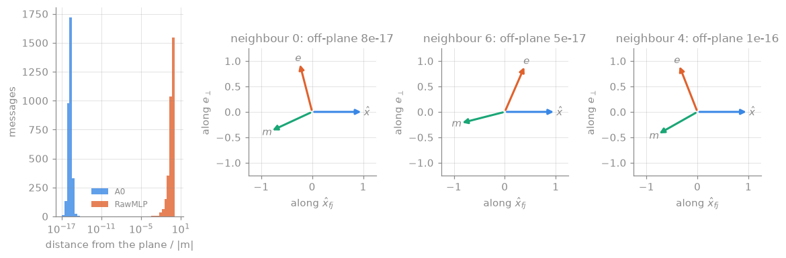
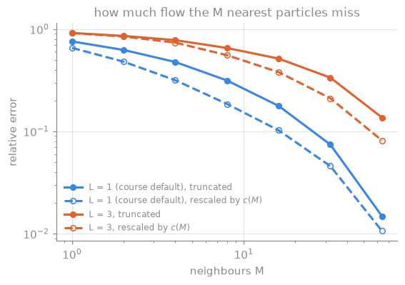

Pair geometry: what one neighbour tells a query point#
What you will learn
How to build every input the A0 model sees for a query point: the offsets \(\mathbf x_{fj}\), the state directions \(\mathbf e_j\) and the scalars \([\lvert\mathbf q_j\rvert, \rho, \phi_j]\) of its \(M\) nearest particles.
Which inputs are scalars (
0e) and which are vectors (1o), and how to check that numerically under rotations, reflections, translations and relabelling.Why a plain MLP on raw coordinates fails, first as a numerical check and then as a drop in accuracy on a test set that is rotated and reflected.
How A0 puts the pieces together: scalar branch, vector branch, channel product, head and sum. You will check that its output is a polar vector (
1o) and that every message lies in \(\mathrm{span}(\mathbf x_{fj}, \mathbf e_j)\).How much of the flow the \(M\) nearest particles explain, and how fast the truncation error falls with \(M\).
Prerequisites: Lesson 00 (the one-line equivariance check) and Part I,
especially Lesson 01b on superposition and the slip state. For irreps,
0e/1o and why vectors transform as \(\mathbf v \mapsto g\mathbf v\), see the
MolSSI e3nn course [The Molecular Sciences Software Institute (MolSSI), 2024].
This lesson opens Part II. It gives an overview of the whole A0 model. The next lessons go into more depth: 02b builds each layer by hand, 02c proves the span property, and 02d shows that the e3nn and plain-PyTorch versions compute the same function.
import time
import numpy as np
import torch
import matplotlib.pyplot as plt
from course_utils import toy_data as td
from course_utils.equivariance import (apply, check_equivariance, check_invariance, check_permutation,
check_translation, random_o3, report, span_residual)
from course_utils.models import MiniA0, neighbour_invariants
from course_utils.plotting import PALETTE, INK
t_start = time.time()
torch.set_num_threads(min(4, torch.get_num_threads()))
1. A query point and its \(M\) nearest particles#
The surrogate predicts the fluid velocity \(\mathbf u(\mathbf x_f)\) at a query point \(\mathbf x_f\) outside the particles. It looks only at the \(M\) particles nearest to \(\mathbf x_f\). For each neighbour \(j\) it receives three things:
input |
definition |
type |
|---|---|---|
offset |
\(\mathbf x_{fj} = \mathbf x_f - \mathbf r_j\), from the centre of \(j\) to the query point |
vector ( |
state direction |
\(\mathbf e_j = \mathbf q_j / \lvert\mathbf q_j\rvert\), the direction of \(j\)’s slip |
vector ( |
state scalars |
\([\lvert\mathbf q_j\rvert,\ \rho,\ \phi_j]\): slip speed, density ratio, local volume fraction |
3 scalars ( |
The research model’s first scalar is the particle Reynolds number \(\lvert\mathrm{Re}_j\rvert = \lvert\mathbf q_j\rvert d/\nu\). The toy uses units with diameter \(d = 1\) and viscosity \(\nu = 1\), so there it is simply the slip speed.
The state \(\mathbf q_j\) is the particle’s velocity relative to the surrounding fluid, its slip (Lesson 01b). Here we use the toy’s exact slip \(\mathbf s_j\) as the state. This is an oracle: in practice the exact slip is unknown, and Part III shows how the model estimates it.
Velocities need a reference frame. When particles settle, the fluid as a whole moves up to keep the net volume flux zero; this uniform backflow \(\mathbf U_b\) is known exactly in the toy. In this lesson the target is the velocity minus \(\mathbf U_b\), because that frame rotates exactly with the suspension. The research instead subtracts the exterior mean fluid velocity \(\langle\mathbf u_f\rangle\) measured in each snapshot; Lesson 01c compares the two frames.
snap = cu.make_snapshot(seed=0) # 96 spheres in an 8 x 8 x 8 box
q = snap.slip # oracle state (Part III estimates it)
rng = np.random.default_rng(1)
pts = snap.sample_exterior(5, rng=rng) # five query points
M = 8
inp = cu.neighbour_inputs(pts, snap.positions, q, snap.phi_local, snap.density_ratio, M)
for k, v in inp.items():
print(f"{k:8s} {tuple(v.shape)} {v.dtype}")
scalars (5, 8, 3) torch.float64
e_j (5, 8, 3) torch.float64
x_fj (5, 8, 3) torch.float64
idx (5, 8) torch.int64
The shapes are (query points, neighbours, 3). Neighbours are sorted nearest first. We now rebuild these tensors by hand for one query point and compare them with the library function:
p = pts[0]
d = np.linalg.norm(p - snap.positions, axis=1)
nbr = np.argsort(d)[:M] # the M nearest particles
x_fj = p - snap.positions[nbr] # offsets, centre -> query
qn = np.linalg.norm(q[nbr], axis=1)
e_j = q[nbr] / qn[:, None] # unit state directions
scal = np.stack([qn, np.full(M, snap.density_ratio), snap.phi_local[nbr]], 1)
err = max(np.abs(x_fj - inp["x_fj"][0].numpy()).max(), np.abs(e_j - inp["e_j"][0].numpy()).max(),
np.abs(scal - inp["scalars"][0].numpy()).max())
print(report("hand-built inputs vs neighbour_inputs", err, 1e-12))
print("distances to the neighbours:", np.round(d[nbr], 2))
PASS hand-built inputs vs neighbour_inputs: max error 0.0e+00 (tol 1e-12)
distances to the neighbours: [0.73 1.3 1.47 1.65 1.7 2.12 2.12 2.24]
The figure shows what one query point sees. Particles and arrows are projected onto the \(x\)-\(y\) plane, and gravity points down (\(-y\)). Gray arrows are the offsets \(\mathbf x_{fj}\) and orange arrows are the state directions \(\mathbf e_j\). Each \(\mathbf e_j\) is a 3D unit vector, so its projected arrow looks shorter when it tilts out of the page. For the same reason the star can appear to sit on top of a disc: that particle lies above or below the query point in \(z\).

2. Scalars and vectors: checking the input types#
Suppose we rotate or reflect the whole suspension by an orthogonal matrix \(g\in O(3)\). Positions, velocities and query points all transform as \(\mathbf r\mapsto g\mathbf r\). Then:
In e3nn’s language, the two vectors are 1o irreps (polar vectors, which flip under inversion) and the
scalars are 0e. The MolSSI course explains the notation. Here we only check it. We wrap the input
construction as a function of the raw data, (query points, centres, states), and let
check_equivariance transform all three. build_inputs also recomputes the local volume fraction \(\phi_j\)
from the transformed positions, so this check, and the translation and relabelling checks below, cover
\(\phi_j\) too.
pts64 = snap.sample_exterior(200, rng=np.random.default_rng(2))
M = 16
def build_inputs(points, positions, states):
phi = td.local_volume_fraction(positions, snap.config.radius, snap.config.phi_radius)
out = cu.neighbour_inputs(points, positions, states, phi, snap.density_ratio, M)
return out["scalars"].numpy(), out["e_j"].numpy(), out["x_fj"].numpy()
check_equivariance(build_inputs, (pts64, snap.positions, q), ("vector", "vector", "vector"),
out_kind=("scalar", "vector", "vector"), name="inputs (scalars, e_j, x_fj)");
PASS inputs (scalars, e_j, x_fj): max error 8.0e-16 (tol 1e-12) [5 random g in O(3), det = [-1, 1]]
The check passes for rotations and reflections (\(\det g = \pm 1\)). The neighbour lists do not change, because \(g\) preserves distances.
Translations. The inputs contain only differences of positions and the states. Shifting every point by the same vector therefore changes nothing:
def inputs_flat(points, positions):
s, e, x = build_inputs(points, positions, q)
return np.concatenate([s, e, x], -1)
check_translation(inputs_flat, pts64, snap.positions, name="inputs under translation");
PASS inputs under translation: max error 4.9e-16 (tol 1e-12) [3 random translations]
Relabelling. Particle numbers are arbitrary. If we shuffle the order in which the particles are stored, the inputs must not change, because the neighbours are sorted by distance and not by label:
perm = np.random.default_rng(3).permutation(snap.n)
s0, e0, x0 = build_inputs(pts64, snap.positions, q)
s1, e1, x1 = build_inputs(pts64, snap.positions[perm], q[perm])
err = max(np.abs(s0 - s1).max(), np.abs(e0 - e1).max(), np.abs(x0 - x1).max())
print(report("inputs under relabelling of the particles", err, 1e-12))
PASS inputs under relabelling of the particles: max error 0.0e+00 (tol 1e-12)
Pair invariants. From one neighbour alone we can form these rotation-invariant numbers: the three state
scalars, the distance \(r_j = \lvert\mathbf x_{fj}\rvert\), the cosine \(\hat{\mathbf x}_{fj}\cdot\mathbf e_j\) and
\(\lvert\mathbf e_j\rvert\), which is 1 unless the state is zero. models.neighbour_invariants returns them. They
are what a hand-made invariant model would use (PairMLP in Part V):
S = torch.as_tensor(s0); E = torch.as_tensor(e0); X = torch.as_tensor(x0)
check_invariance(lambda s, e, x: neighbour_invariants(s, e, x)[0], (S, E, X),
("scalar", "vector", "vector"), name="pair invariants I_j");
PASS pair invariants I_j: max error 4.8e-16 (tol 1e-12) [5 random g in O(3), det = [-1, 1]]
Does the data obey the symmetry? All of these checks are about the inputs. The targets must transform
in the same way, or no equivariant model could fit them. snap.rotated(g) builds the suspension transformed by \(g\) (the name says “rotated”, but \(g\) may include a reflection) and
recomputes the true flow from scratch, including the self-consistent slip. It applies \(g\) about the box centre
\(\mathbf c\), so we map the query points as \(\mathbf c + g(\mathbf x - \mathbf c)\):
c = np.full(3, snap.config.box / 2)
worst = 0.0
gs = random_o3(4, seed=4).numpy()
print("det g:", np.round(np.linalg.det(gs)).astype(int))
for g in gs:
snap_g = snap.rotated(g)
u_rot = snap_g.field(c + (pts64 - c) @ g.T) # truth recomputed in the transformed world
worst = max(worst, np.abs(u_rot - snap.field(pts64) @ g.T).max())
print(report("toy truth: u_g(g x) = g u(x)", worst, 1e-12, f"{len(gs)} random g in O(3)"))
det g: [ 1 1 1 -1]
PASS toy truth: u_g(g x) = g u(x): max error 2.1e-15 (tol 1e-12) [4 random g in O(3)]
3. Failure first: a plain MLP on raw coordinates#
The obvious first model takes the nine numbers of each neighbour, \([\text{scalars}, \mathbf x_{fj}, \mathbf e_j]\), and feeds them to an MLP that outputs a 3-vector message. It then sums the messages. Summing makes the model independent of neighbour order, but nothing in it knows that the last six numbers are vectors:
class RawMLP(torch.nn.Module):
"""Per-neighbour MLP on the 9 raw numbers [s_j, x_fj, e_j] -> 3-vector message; sum over j.
Permutation-invariant, but NOT rotation-equivariant."""
def __init__(self, width=64, depth=3):
super().__init__()
layers, n_in = [], 9
for _ in range(depth):
layers += [torch.nn.Linear(n_in, width), torch.nn.GELU()]
n_in = width
self.net = torch.nn.Sequential(*layers, torch.nn.Linear(width, 3))
def messages(self, scalars, e_j, x_fj):
return self.net(torch.cat((scalars, x_fj, e_j), -1))
def forward(self, scalars, e_j, x_fj):
return self.messages(scalars, e_j, x_fj).sum(1)
KINDS = ("scalar", "vector", "vector")
torch.manual_seed(0)
raw = RawMLP().double()
try:
check_equivariance(raw, (S, E, X), KINDS, name="RawMLP")
except AssertionError as err:
print("caught:", err)
check_permutation(raw, (S, E, X), axis=1, name="RawMLP (neighbour order)");
FAIL RawMLP: max error 2.3e+00 (tol 1e-12) [5 random g in O(3), det = [-1, 1]]
caught: RawMLP: equivariance error 2.300e+00 >= tol 1.0e-12
PASS RawMLP (neighbour order): max error 3.6e-16 (tol 1e-12) [3 random permutations of axis 1 (invariant)]
The error is of order one: the model gives an unrelated answer for a transformed input. Training could in principle
teach it the symmetry. Let us see what it actually learns. We train RawMLP and A0 on the same small toy data
(four training snapshots, two test snapshots). RawMLP gets 100 epochs, which is enough for it to fit the
training data well; A0 gets 25 epochs (each A0 epoch costs more). Then we evaluate both on the test set as it
is, and on the same test set transformed by one random \(g\in O(3)\). The cell prints \(\det g\); here it is a
reflection combined with a rotation. Section 2 showed that the transformed data is exactly what the transformed
suspension would produce.
from course_utils.training import train, predict, split_by_snapshot
from course_utils.metrics import r2
snaps = cu.make_snapshots(6, seed0=10)
data = cu.make_dataset(snaps, n_points=600, M=16, frame="backflow", state="true", seed=0,
dtype=torch.float32)
tr, te = split_by_snapshot(data, [0, 1, 2, 3], [4, 5])
print("train rows", len(tr["y"]), " test rows", len(te["y"]))
g = random_o3(seed=7, dtype=torch.float32) # one fixed element of O(3)
print("det g =", round(float(torch.linalg.det(g))))
te_rot = {**te, "e_j": apply(g, te["e_j"]), "x_fj": apply(g, te["x_fj"]), "y": apply(g, te["y"])}
models, epochs = {}, {"RawMLP": 100, "A0": 25}
torch.manual_seed(0); models["RawMLP"] = RawMLP(64, 3)
torch.manual_seed(0); models["A0"] = MiniA0(width=48, depth=3)
results = {}
for name, m in models.items():
t0 = time.time()
train(m, tr, epochs=epochs[name], lr=2e-3, batch=128, seed=0, verbose=False)
results[name] = (float(r2(predict(m, te), te["y"])), float(r2(predict(m, te_rot), te_rot["y"])))
print(f"{name:7s} train R2 {r2(predict(m, tr), tr['y']):.3f} test R2 {results[name][0]:.3f}"
f" transformed test R2 {results[name][1]:.3f} ({epochs[name]} epochs, {time.time() - t0:.0f} s)")
train rows 2400 test rows 1200
det g = -1
RawMLP train R2 0.815 test R2 0.762 transformed test R2 -3.567 (100 epochs, 3 s)
A0 train R2 0.861 test R2 0.865 transformed test R2 0.865 (25 epochs, 2 s)

In the training orientation RawMLP does well: given enough epochs it fits the toy almost as well as A0. But
what it learns is tied to that orientation (for example, that gravity points along \(-y\)). On the transformed
test set its \(R^2\) is far below zero. \(R^2 = 0\) means “as good as always predicting the test set’s mean flow”,
so a negative \(R^2\) means it does worse than that constant guess. A0 gives the same \(R^2\) on both test sets, up
to float32 round-off. It never saw a transformed example; the symmetry comes from the architecture.
Animation S1, equivariance. The whole input, positions and states, rotates by \(R\) while the camera stays fixed. Left: an A0-style model. Its prediction (teal) turns with the input and covers the expected answer \(R\,\mathbf f(\mathbf x)\) (white sleeve) for the whole turn. Right: a plain MLP on raw coordinates, fit in one pose, like RawMLP above. Its prediction and the expected answer separate, and the gap is drawn in orange. The end card states the identity \(\mathbf f(R\mathbf x) = R\,\mathbf f(\mathbf x)\): rotate then predict equals predict then rotate. The clip shows rotations only; the checks in this lesson also include reflections. The clip is drawn on a dark stage in both page themes. Explore the same toy in 3D: open the interactive version in a new tab, or show it here:
Interactive 3D version: equivariant model versus plain MLP under rotation (toy)
4. A0 at a glance: two branches, one product, one sum#
A0 respects the symmetry by construction. For each neighbour \(j\) it computes:
Scalar branch. An MLP on the invariant scalars, with a ReLU after every layer, including the last: \(\;y_u = \mathrm{MLP}\big([\lvert\mathbf q_j\rvert,\rho,\phi_j]\big)_u \ge 0,\; u = 1\dots C.\)
Vector branch. Equivariant linear layers on the two input vectors \((\mathbf x_{fj}, \mathbf e_j)\). Each layer mixes channels with a weight matrix and has no bias: \(\mathbf h_w = C_{\text{in}}^{-1/2}\sum_u W_{uw}\,\mathbf v_u\). A norm activation follows, which keeps each direction up to sign and squashes each length: \(\mathbf v_w = \tanh(\lvert\mathbf h_w\rvert + b_w)\,\mathbf h_w/\lvert\mathbf h_w\rvert\), so \(\lvert\mathbf v_w\rvert < 1\). The learned bias \(b_w\) can be negative, and when \(\lvert\mathbf h_w\rvert < -b_w\) the factor is negative and the vector flips. Either way it stays on the same line.
Product. Channel by channel, the invariant \(y_u\) scales the vector \(\mathbf v_u\). A linear head then mixes the channels into one vector: \(\;\mathbf m_j = C^{-1/2}\sum_u w_u\, y_u\,\mathbf v_u.\)
Sum. The prediction is \(\;\mathbf u(\mathbf x_f) = \sum_{j=1}^{M} \mathbf m_j\) (in the chosen frame).
Why the message turns with the input. Steps 1 to 3 combine only two kinds of object. The numbers \(y_u\) are built from invariants, so a rotation or reflection \(R\) of the input does not change them. Each \(\mathbf v_u\) is a combination of \(\mathbf x_{fj}\) and \(\mathbf e_j\) whose coefficients depend only on lengths and on the angle between the two (a linear mix, then a rescaling by a function of a length), so it turns with them. The product and the head keep that structure, and the message collapses to two invariant numbers times the two input vectors:
Turn the input by \(R\) and the five invariants keep their values, so \(a_j\) and \(b_j\) do too, and the message becomes \(a_j R\mathbf x_{fj} + b_j R\mathbf e_j = R\,\mathbf m_j\). Section 5 checks the plane numerically and Lesson 02c proves it layer by layer.
Animation N1, from one pair to one message. One neighbour \(j\) and one query point: the offset \(\mathbf x_{fj}\) (blue) and the state \(\mathbf q_j = \lvert\mathbf q_j\rvert\,\mathbf e_j\) (yellow). Three invariant numbers are read off, \(r_j\), \(\lvert\mathbf q_j\rvert\) and \(\cos\theta_j\). The scalar branch turns the scalars into \(C = 64\) numbers \(y_u \ge 0\), and the vector branch turns the two vectors into 64 arrows \(\mathbf v_u\) with \(\lvert\mathbf v_u\rvert < 1\). Four channels are drawn, those with the largest \(\lvert w_u\rvert\,y_u\,\lvert\mathbf v_u\rvert\); their scaled arrows and the sum of the other 60 chain tip to tail and close on the message \(\mathbf m_j = C^{-1/2}\sum_u w_u y_u \mathbf v_u\) (pink), next to the exact Stokes velocity for the same pair (dashed teal). A parallelogram then reads off \(a_j\) and \(b_j\) in \(\mathbf m_j = a_j\,\mathbf x_{fj} + b_j\,\mathbf e_j\). Notice the last part: the input is turned in the plane, tilted out of it and mirrored. Every arrow turns, and the printed numbers change only by rounding error. The network in the clip is a MiniA0(64, 3) trained on the Stokes flow of a single sphere, not on the 96-sphere toy of this lesson; the clip writes \(R\) for the rotation or reflection, as Animation S1 does. The clip is drawn on a dark stage in both page themes and has a voice-over with captions.
Lesson 02b builds each layer by hand and shows what goes wrong with a vector bias or a
ReLU on vector components. Here we use course_utils.models.MiniA0 and look at its intermediate outputs:
torch.manual_seed(0)
a0 = MiniA0(width=16, depth=2).double()
with torch.no_grad():
y = a0.scalar_branch(S) # (B, M, C)
v = a0.vector_branch(E, X) # (B, M, C, 3)
m = a0.messages(S, E, X) # (B, M, 3)
u = a0(S, E, X) # (B, 3)
w_head = a0.final_lin_vec.matrix()[:, 0] # (C,) head weights, C^-1/2 folded in
print("scalar branch y :", tuple(y.shape), f" min {y.min():.2f} (ReLU at the end, so y >= 0)")
print("vector branch v :", tuple(v.shape), f" max |v_u| {v.norm(dim=-1).max():.4f} (< 1 from tanh)")
print("messages m_j :", tuple(m.shape))
print("output u :", tuple(u.shape))
# the four steps above, recomputed from the pieces
m_hand = torch.einsum("bmc,bmci,c->bmi", y, v, w_head)
print(report("messages from the pieces vs MiniA0.messages", float((m_hand - m).abs().max()), 1e-12))
print(report("sum of messages vs MiniA0.forward", float((m_hand.sum(1) - u).abs().max()), 1e-12))
scalar branch y : (200, 16, 16) min 0.00 (ReLU at the end, so y >= 0)
vector branch v : (200, 16, 16, 3) max |v_u| 0.9723 (< 1 from tanh)
messages m_j : (200, 16, 3)
output u : (200, 3)
PASS messages from the pieces vs MiniA0.messages: max error 0.0e+00 (tol 1e-12)
PASS sum of messages vs MiniA0.forward: max error 0.0e+00 (tol 1e-12)
Each piece has a type we can check. The scalar branch sees only the scalars, which Section 2 showed are invariant, so \(y_u\) is invariant trivially and needs no separate test. Each vector channel is equivariant, and so are the messages and their sum:
check_equivariance(lambda e, x: a0.vector_branch(e, x), (E, X), ("vector", "vector"),
name="vector branch v_u (every channel)");
check_equivariance(a0.messages, (S, E, X), KINDS, name="messages m_j");
check_equivariance(a0, (S, E, X), KINDS, name="A0 output u");
check_permutation(a0, (S, E, X), axis=1, name="A0 output u (neighbour order)");
PASS vector branch v_u (every channel): max error 7.9e-16 (tol 1e-12) [5 random g in O(3), det = [-1, 1]]
PASS messages m_j: max error 1.1e-16 (tol 1e-12) [5 random g in O(3), det = [-1, 1]]
PASS A0 output u: max error 4.4e-16 (tol 1e-12) [5 random g in O(3), det = [-1, 1]]
PASS A0 output u (neighbour order): max error 2.2e-16 (tol 1e-12) [3 random permutations of axis 1 (invariant)]
A polar vector, not a pseudovector. A rotation cannot tell a polar vector (1o) from a pseudovector (1e).
Only a reflection can. Because our checks include reflections, we can test the claim that \(\mathbf u\) is 1o
by checking that it fails as a pseudovector:
try:
check_equivariance(a0, (S, E, X), KINDS, out_kind="pseudovector", name="A0 output as 1e")
except AssertionError as err:
print("caught:", err)
check_equivariance(a0, (S, E, X), KINDS, out_kind="pseudovector", proper=True,
name="A0 output as 1e, rotations only");
FAIL A0 output as 1e: max error 1.7e+00 (tol 1e-12) [5 random g in O(3), det = [-1, 1]]
caught: A0 output as 1e: equivariance error 1.710e+00 >= tol 1.0e-12
PASS A0 output as 1e, rotations only: max error 5.6e-16 (tol 1e-12) [5 random g in SO(3), det = [1]]
With rotations only, the pseudovector check passes too. This is why every check in the course includes reflections by default. Section 5 shows that this distinction also decides what shape the messages can take.
5. Every message lies in the plane of \(\mathbf x_{fj}\) and \(\mathbf e_j\)#
The vector branch only ever takes linear combinations of vectors and rescales them by invariant numbers. It starts from \(\mathbf x_{fj}\) and \(\mathbf e_j\), so it can never leave the plane they span:
Lesson 02c proves this layer by layer. Here we measure it in two ways:
span_residualgives the distance of \(\mathbf m_j\) from the plane, relative to \(\lvert\mathbf m_j\rvert\).The normalised triple product \(\mathbf m_j\cdot(\mathbf x_{fj}\times\mathbf e_j) / (\lvert\mathbf m_j\rvert \lvert\mathbf x_{fj}\rvert\lvert\mathbf e_j\rvert)\) is zero exactly when \(\mathbf m_j\) lies in the plane.
We skip messages that are exactly zero, which happens when the ReLU switches off every channel. We also skip pairs where \(\mathbf x_{fj}\) and \(\mathbf e_j\) are nearly parallel, because the plane is then poorly defined.
def plane_stats(msgs, e, x):
mag = msgs.norm(dim=-1)
sin_xe = torch.linalg.cross(x, e).norm(dim=-1) / (x.norm(dim=-1) * e.norm(dim=-1))
keep = (mag > 1e-8 * mag.max()) & (sin_xe > 1e-2)
res = span_residual(msgs, x, e)[keep]
trip = ((msgs * torch.linalg.cross(x, e)).sum(-1) / (mag * x.norm(dim=-1) * e.norm(dim=-1)))[keep]
return res, trip, int(keep.sum()), keep.numel()
with torch.no_grad():
res_a0, trip_a0, n_keep, n_all = plane_stats(a0.messages(S, E, X), E, X)
res_raw, trip_raw, _, _ = plane_stats(raw.messages(S, E, X), E, X)
print(f"messages checked: {n_keep} of {n_all}")
print(report("A0: distance of m_j from span(x_fj, e_j)", float(res_a0.max()), 1e-12))
print(report("A0: normalised triple product", float(trip_a0.abs().max()), 1e-12))
print(f"RawMLP: median distance from the plane {float(res_raw.median()):.2f} (|m| = 1 would be fully off-plane)")
messages checked: 3200 of 3200
PASS A0: distance of m_j from span(x_fj, e_j): max error 4.9e-15 (tol 1e-12)
PASS A0: normalised triple product: max error 5.2e-16 (tol 1e-12)
RawMLP: median distance from the plane 0.49 (|m| = 1 would be fully off-plane)
The same holds for the trained A0 of Section 3, which was trained in float32. We cast it to float64 and also confirm that training did not affect its equivariance:
a0_trained = models["A0"].double()
with torch.no_grad():
res_t, trip_t, _, _ = plane_stats(a0_trained.messages(S, E, X), E, X)
print(report("trained A0: distance of m_j from the plane", float(res_t.max()), 1e-12))
check_equivariance(a0_trained, (S, E, X), KINDS, name="trained A0 output u");
PASS trained A0: distance of m_j from the plane: max error 1.6e-13 (tol 1e-12)
PASS trained A0 output u: max error 2.2e-15 (tol 1e-12) [5 random g in O(3), det = [-1, 1]]
The left panel compares the two models over every message. On the right, three A0 messages are drawn in the plane’s own coordinates: the first axis is along \(\hat{\mathbf x}_{fj}\) and the second is the part of \(\mathbf e_j\) perpendicular to it.

Each A0 message is a combination of two known vectors. This restriction is not a weakness of A0. A polar
vector built from two polar vectors and invariant numbers must have this form under the full group \(O(3)\)
(Lesson 02c), and the transformer B of Part V uses it too. The reflections matter here: with rotations only,
the cross product \(\mathbf x_{fj}\times\mathbf e_j\) would also be allowed. It rotates like a vector but does
not flip under inversion, so it is a pseudovector (1e), exactly the type the output failed as in Section 4.
Requiring \(O(3)\) rather than \(SO(3)\) is what rules it out.
What A0 cannot do is let neighbour \(j\)’s coefficients depend on where the other neighbours are. Part V returns
to this.
6. How many neighbours are enough?#
A0 sums over the \(M\) nearest particles and ignores the rest. In the toy, the true flow is itself a sum over all \(N\) particles of the disturbance of one sphere, \(G(\mathbf x - \mathbf r_j)\,\mathbf s_j\) (Lesson 01b), plus the uniform backflow. First we check that identity. Then we truncate the sum to the \(M\) nearest particles and measure the error relative to the size of the disturbance flow:
This is the error of truncating the exact pair sum: a model that knows the exact per-pair formula and the exact states, but simply drops particles beyond the \(M\)-th. A learned model can do somewhat better. The far particles also settle roughly downward, so their flow is correlated with what the \(M\) neighbours look like, and a model can absorb that correlated part into its near-neighbour messages. The part of the far field that is not correlated with the \(M\) neighbours stays out of reach. The simplest such correction, multiplying the truncated sum by one constant \(c(M)\) fitted by least squares on the same query points, already lowers the error; we plot it as a dashed line.
Animation N4 in Lesson 02c, Section 6.2 draws this truncation as arrows added tip to tail, and shows why the dropped far terms do not cancel.
The toy’s disturbance of one sphere is the Stokes solution multiplied by a screening factor \(\exp(-(r-a)/L)\), with \(a\) the radius and \(L\) the screening length. The factor is a toy stand-in for the way neighbours hinder long-range flow in a suspension, not a physical model.
def truncation_curve(snap, points, Ms):
cfg = snap.config
xf = points[:, None, :] - snap.positions[None] # (P, N, 3)
contrib = np.einsum("pnij,nj->pni", td.stokes_sphere_matrix(xf, cfg.radius, cfg.screening_length),
snap.slip) # (P, N, 3)
order = np.argsort(np.linalg.norm(xf, axis=-1), axis=1)
contrib = np.take_along_axis(contrib, order[..., None], axis=1) # nearest first
full = contrib.sum(1)
ident = np.abs(full + snap.backflow - snap.field(points)).max()
csum = np.cumsum(contrib, axis=1)
eps, eps_c = [], []
for m in Ms:
t = csum[:, m - 1]
c = (t * full).sum() / (t * t).sum() # best single scale factor (least squares)
eps.append(np.linalg.norm(t - full) / np.linalg.norm(full))
eps_c.append(np.linalg.norm(c * t - full) / np.linalg.norm(full))
return np.array(eps), np.array(eps_c), ident
Ms = [1, 2, 4, 8, 16, 32, 64, 96]
pts_t = snap.sample_exterior(400, rng=np.random.default_rng(5))
curves, curves_c = {}, {}
for label, L in [("L = 1 (course default)", 1.0), ("L = 3", 3.0)]:
s_L = cu.make_snapshot(seed=0, screening_length=L)
curves[label], curves_c[label], ident = truncation_curve(s_L, pts_t, Ms)
print(report(f"U_b + sum over all N reproduces snap.field ({label})", ident, 1e-12))
for label in curves:
print(f"{label:24s} truncated:", " ".join(f"M={m}: {e:.2f}" for m, e in zip(Ms, curves[label]) if m in (4, 16, 32)),
" rescaled:", " ".join(f"M={m}: {e:.2f}" for m, e in zip(Ms, curves_c[label]) if m in (4, 16, 32)))
PASS U_b + sum over all N reproduces snap.field (L = 1 (course default)): max error 1.8e-15 (tol 1e-12)
PASS U_b + sum over all N reproduces snap.field (L = 3): max error 1.3e-15 (tol 1e-12)
L = 1 (course default) truncated: M=4: 0.48 M=16: 0.18 M=32: 0.07 rescaled: M=4: 0.32 M=16: 0.10 M=32: 0.05
L = 3 truncated: M=4: 0.78 M=16: 0.51 M=32: 0.34 rescaled: M=4: 0.74 M=16: 0.38 M=32: 0.21

With the default screening the error falls steadily with \(M\), but slowly: even 16 neighbours miss a noticeable part of the flow. A longer screening length makes the disturbance reach further, so more neighbours are needed. The dashed curves show that a single learned scale factor recovers part of the missing far field, but not all of it. Without screening, the Stokes disturbance decays only as \(1/r\) and \(M\) would matter even more. This is one reason the choice of \(M\) is a real modelling decision. In the research, the data came from particle-resolved simulations by collaborators, where wakes and long-range effects play this role. The research model also differs in size and bookkeeping: it is wider (a few hundred channels), and because those simulations use a periodic box, its offsets \(\mathbf x_{fj}\) use the minimum-image convention (the nearest periodic copy of each particle).
Summary#
A0 sees, for each of the \(M\) nearest particles, two vectors (\(\mathbf x_{fj}\) and \(\mathbf e_j\), both
1o) and three scalars (\(\lvert\mathbf q_j\rvert, \rho, \phi_j\), all0e). The inputs are rotation- and reflection-equivariant, translation-invariant and independent of particle labels, and we checked each of these numerically.A plain MLP on the raw nine numbers per neighbour fails the equivariance check. After training, it fits the training orientation well but does worse than a constant mean-flow guess once the test set is transformed by an element of O(3).
A0 combines an invariant scalar MLP (\(y_u\ge0\)) with an equivariant, bias-free vector stack (\(\lvert\mathbf v_u\rvert<1\)) by a channel-wise product, a linear head and a sum over neighbours. Its output passes the O(3) check as a polar vector and fails as a pseudovector.
Every A0 message lies in \(\mathrm{span}(\mathbf x_{fj}, \mathbf e_j)\), to float64 round-off. Reflection symmetry is what excludes the pseudovector \(\mathbf x_{fj}\times\mathbf e_j\).
Truncating the exact pair sum to \(M\) neighbours loses part of the flow. A learned model can recover the part of the far field that correlates with its neighbours, but not the rest. How much is lost depends on how far the disturbance of one particle reaches.
Exercises#
A hidden axis. Replace \(\phi_j\) in the scalars by the neighbour’s height \(r_{j,y}\), a number that looks like a scalar. Build the inputs with this change and run the input check of Section 2. Which part fails, and why?
A third vector. Suppose the model also received the gravity direction \(\hat{\mathbf g}\) as a vector input for every neighbour. Would messages still lie in \(\mathrm{span}(\mathbf x_{fj}, \mathbf e_j)\)? Test it with
span_residualusing a toy linear map \(\mathbf m = a\,\mathbf x + b\,\mathbf e + c\,\hat{\mathbf g}\). What changes if you also rotate \(\hat{\mathbf g}\) in the check?Data augmentation instead of structure. Retrain
RawMLPwithaugment=cu.models.augmentintrain(...), which applies an independent random O(3) element to every query row (each row’s offsets, state directions and target together), drawn afresh for each minibatch. Compare its test and transformed-test \(R^2\) with Section 3. Is it now exactly equivariant?
Solution 1
def build_inputs_bad(points, positions, states):
out = cu.neighbour_inputs(points, positions, states, positions[:, 1], snap.density_ratio, M)
return out["scalars"].numpy(), out["e_j"].numpy(), out["x_fj"].numpy()
try:
check_equivariance(build_inputs_bad, (pts64, snap.positions, q), ("vector", "vector", "vector"),
out_kind=("scalar", "vector", "vector"), name="inputs with height")
except AssertionError as err:
print("caught:", err)
The scalars fail. A height is one component of a position, so it changes under rotation and is not an invariant. A0 has no way to know which way is up except through the vectors it is given. In the problem, the direction of gravity enters only through the states \(\mathbf q_j\), which point roughly downward.
Solution 2
gvec = torch.tensor([0.0, -1.0, 0.0], dtype=torch.float64).expand_as(X)
m3 = 0.3 * X + 0.5 * E + 0.7 * gvec
print("distance from span(x, e):", float(span_residual(m3, X, E).median()))
f = lambda s, e, x: (0.3 * x + 0.5 * e + 0.7 * gvec).sum(1)
try:
check_equivariance(f, (S, E, X), KINDS, name="fixed gravity vector")
except AssertionError as err:
print("caught:", err)
f2 = lambda s, e, x, gv: (0.3 * x + 0.5 * e + 0.7 * gv).sum(1)
check_equivariance(f2, (S, E, X, gvec), KINDS + ("vector",), name="gravity as an input vector")
The messages leave the plane: with three input vectors the span is all of 3D. If \(\hat{\mathbf g}\) is a fixed constant, the model is no longer equivariant, which is the same failure as the bias in Lesson 00. If \(\hat{\mathbf g}\) is treated as an input that rotates with the system, equivariance is restored. Each message then lies in \(\mathrm{span}(\mathbf x_{fj}, \mathbf e_j, \hat{\mathbf g})\).
Solution 3
torch.manual_seed(0)
raw_aug = RawMLP(64, 3)
train(raw_aug, tr, epochs=100, lr=2e-3, batch=128, seed=0, verbose=False, augment=cu.models.augment)
print("test", float(r2(predict(raw_aug, te), te["y"])),
"transformed", float(r2(predict(raw_aug, te_rot), te_rot["y"])))
try:
check_equivariance(raw_aug.double(), (S, E, X), KINDS, name="RawMLP + augmentation")
except AssertionError as err:
print("caught:", err)
Augmentation closes the gap between the two test sets: the model has now seen many orientations, so a transformation no longer surprises it. On this small toy, with 100 epochs, both \(R^2\) values come out close to A0’s (we measured about 0.85 and 0.84). It still fails the exact check, with an error of order 0.1 instead of 1e-15: the symmetry is learned only approximately, on the kind of inputs it was shown, and it took four times as many epochs as A0. Part V compares this “learned symmetry” approach with built-in symmetry for transformers.
References#
MolSSI e3nn course, Introduction [The Molecular Sciences Software Institute (MolSSI), 2024]: irreps (
0e,1o,1e), equivariance, and e3nn’s linear layers and gates.M. Geiger and T. Smidt, e3nn: Euclidean Neural Networks [Geiger and Smidt, 2022]: the library A0 is built with, including
o3.LinearandNormActivation.M. Zaheer et al., Deep Sets [Zaheer et al., 2017]: why a sum over a set of neighbours gives permutation invariance.
V. G. Satorras, E. Hoogeboom and M. Welling, E(n) Equivariant Graph Neural Networks [Satorras et al., 2021]: another model whose vector outputs are invariant-weighted sums of relative positions.
J. Happel and H. Brenner, Low Reynolds Number Hydrodynamics [Happel and Brenner, 1983]: the Stokes disturbance of a translating sphere used by the toy.